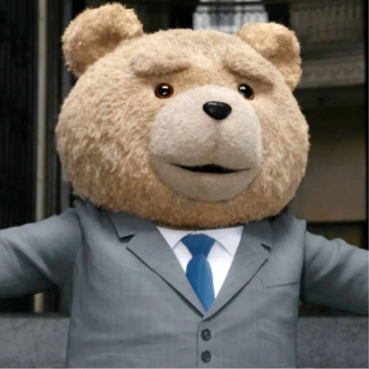

Logan:
Logan (alias "Logay") es el manco oficial del grupo. Famoso por seleccionar siempre al personaje con las mecánicas más coloridas, exóticas o abiertamente $gay$ de la plantilla, tiene un talento casi místico para convertir cualquier partida ganada en una derrota catastrófica. Mientras él se justifica diciendo que sus personajes "tienen el mejor lore", todo el equipo sabe la verdad: no importa a quién elija, Logan siempre encontrará la forma de manquear en pantalla completa.
Bakon:
Bakon es la verdadera pesadilla del matchmaking y la definición andante de tryhard. Dotado de una precisión quirúrgica y reflejos inhumanos, no necesita escudarse en personajes "rotos" ni en la suerte: su gameplay es 100% habilidad pura. Es el terror absoluto de Logan, a quien usa de saco de boxeo personal en cada partida, humillándolo y papeándolo en vivo ante todo el grupo mientras hace jugadas de nivel profesional casi sin esforzarse.